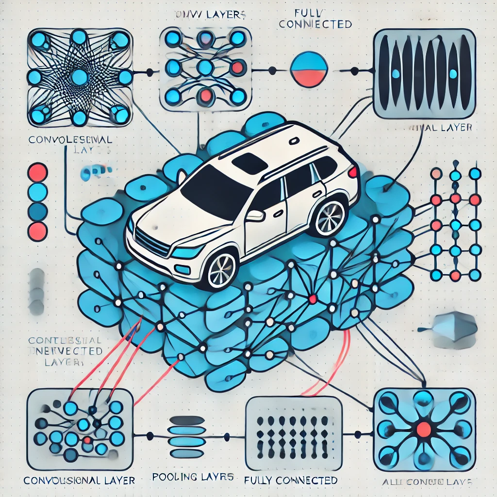
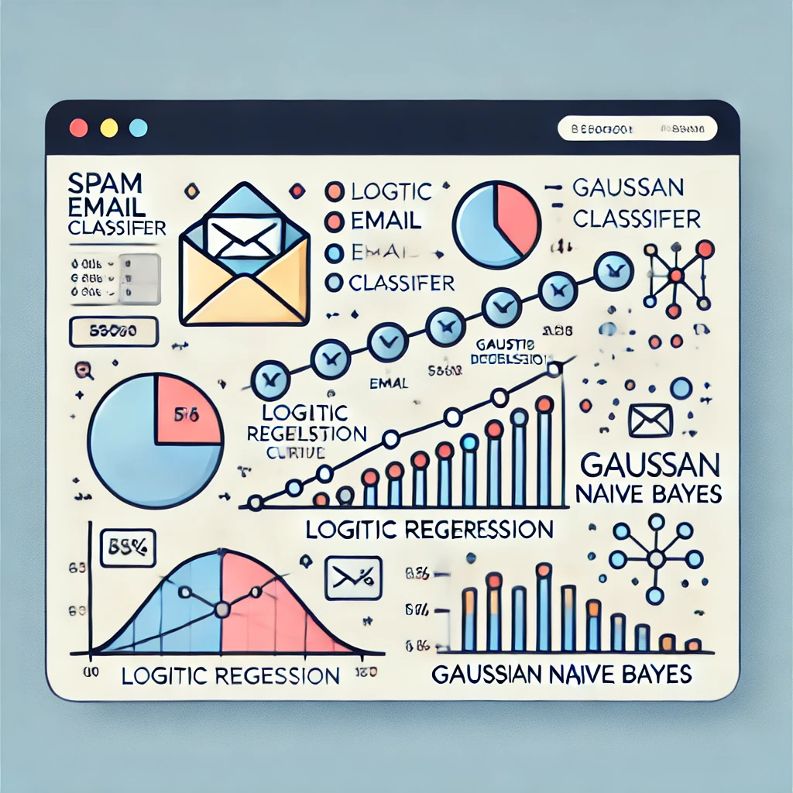

Felipe Catalán
Ingeniero Comercial y Analista de Datos
¡Hola! 👋 Soy un apasionado de la ciencia y el análisis de datos. He realizado diferentes proyectos relacionados, desde estadística descriptiva hasta machine learning y redes neuronales. Te invito a explorar mis trabajos destacados en esta página.
Sobre Mí
Soy Felipe Catalán, Ingeniero Comercial y Analista de Datos. Mi objetivo es mostrar mis habilidades en programación y análisis de datos para mejorar mis opciones de empleabilidad. Tengo experiencia en diversos proyectos de ciencia de datos, incluyendo estadística descriptiva, machine learning y redes neuronales.
Conocimientos
Mis habilidades se potencian con el uso de ChatGPT, lo que me permite optimizar procesos, generar ideas innovadoras y explorar nuevos procedimientos de manera eficiente.
Programación
Python, R, JavaScript, SQL, VBA
Visualización de Datos
Looker Studio, Power BI, Matplotlib, Seaborn, ggplot2
Machine Learning y Deep Learning
scikit-learn, PyTorch
Integración de Herramientas
Google Sheets, Jira
Metodologías Ágiles
Kanban
Uso de Herramientas
SAP, Excel, ChatGPT
Proyectos Destacados
Clasificador de Autos SUV
Red Neuronal Convolucional
Utiliza una red neuronal convolucional (CNN) para clasificar imágenes de autos en dos categorías: SUV y otros tipos de autos. La CNN fue entrenada con una base de datos de imágenes de vehículos, aprendiendo a identificar características visuales distintivas que diferencian a los SUVs del resto de los vehículos.
Clasificador de Correos SPAM
Regresión Logística y Gaussian Naive Bayes
Clasifica correos electrónicos como SPAM o no SPAM utilizando dos enfoques de aprendizaje automático: regresión logística y Gaussian Naive Bayes. La combinación de ambos modelos proporciona una robusta capacidad de clasificación.